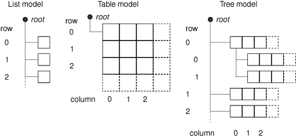
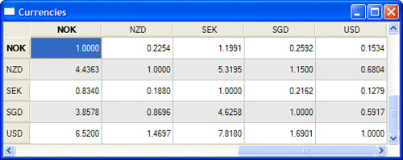
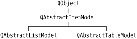
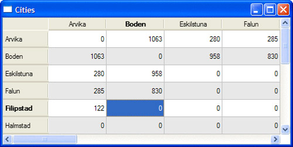
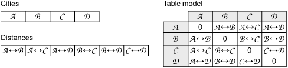
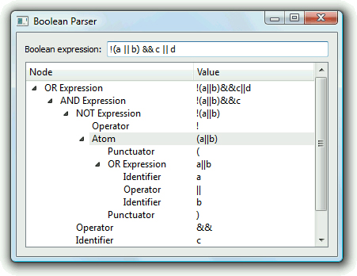

|
|
Qt's predefined models offer a convenient means of handling and viewing data. However, some data sources cannot be used efficiently using the predefined models, and for these situations it is necessary to create custom models optimized for the underlying data source.
Before we embark on creating custom models, let's first review the key concepts used in Qt's model/view architecture. Every data element in a model has a model index and a set of attributes, called roles, that can take arbitrary values. We saw earlier in the chapter that the most commonly used roles are Qt::DisplayRole and Qt::EditRole. Other roles are used for supplementary data (e.g., Qt::ToolTipRole, Qt::StatusTipRole, and Qt::WhatsThisRole), and yet others for controlling basic display attributes (such as Qt::FontRole, Qt::TextAlignmentRole, Qt::TextColorRole, and Qt::BackgroundColorRole).
For a list model, the only relevant index component is the row number, accessible from QModelIndex::row(). For a table model, the relevant index components are the row and column numbers, accessible from QModelIndex::row() and QModelIndex::column(). For both list and table models, every item's parent is the root, which is represented by an invalid QModelIndex. The first two examples in this section show how to implement custom table models.
A tree model is similar to a table model, with the following differences. Like a table model, the parent of top-level items is the root (an invalid QModelIndex), but every other item's parent is some other item in the hierarchy. Parents are accessible from QModelIndex::parent(). Every item has its role data, and zero or more children, each an item in its own right. Since items can have other items as children, it is possible to represent recursive (tree-like) data structures, as the final example in this section will show. Figure 10.9 shows a schematic of the different models.

The first example in this section is a read-only table model that shows currency values in relation to each other. The application is shown in Figure 10.10.

The application could be implemented using a simple table, but we want to use a custom model to take advantage of certain properties of the data to minimize storage. If we were to store the 162 currently traded currencies in a table, we would need to store 162 x 162 = 26244 values; with the custom CurrencyModel shown in this section, we need to store only 162 values (the value of each currency in relation to the U.S. dollar).
The CurrencyModel class will be used with a standard QTableView. The CurrencyModel is populated with a QMap<QString, double>; each key is a currency code and each value is the value of the currency in U.S. dollars. Here's a code snippet that shows how the map is populated and how the model is used:
QMap<QString, double> currencyMap;
currencyMap.insert("AUD", 1.3259);
currencyMap.insert("CHF", 1.2970);
...
currencyMap.insert("SGD", 1.6901);
currencyMap.insert("USD", 1.0000);
CurrencyModel currencyModel;
currencyModel.setCurrencyMap(currencyMap);
QTableView tableView;
tableView.setModel(¤cyModel);
tableView.setAlternatingRowColors(true);
Now we can look at the implementation of the model, starting with its header:
class CurrencyModel : public QAbstractTableModel
{
public:
CurrencyModel(QObject *parent = 0);
void setCurrencyMap(const QMap<QString, double> &map);
int rowCount(const QModelIndex &parent) const;
int columnCount(const QModelIndex &parent) const;
QVariant data(const QModelIndex &index, int role) const;
QVariant headerData(int section, Qt::Orientation orientation,
int role) const;
private:
QString currencyAt(int offset) const;
QMap<QString, double> currencyMap;
};
We have chosen to subclass QAbstractTableModel for our model since that most closely matches our data source. Qt provides several model base classes, including QAbstractListModel, QAbstractTableModel, and QAbstractItemModel; see Figure 10.11. The QAbstractItemModel class is used to support a wide variety of models, including those that are based on recursive data structures, while the QAbstractListModel and QAbstractTableModel classes are provided for convenience when using one-dimensional or two-dimensional data sets.

For a read-only table model, we must reimplement three functions: rowCount(), columnCount(), and data(). In this case, we have also reimplemented headerData(), and we provide a function to initialize the data (setCurrencyMap()).
CurrencyModel::CurrencyModel(QObject *parent)
: QAbstractTableModel(parent)
{
}
We do not need to do anything in the constructor, except pass the parent parameter to the base class.
int CurrencyModel::rowCount(const QModelIndex & /* parent */) const
{
return currencyMap.count();
}
int CurrencyModel::columnCount(const QModelIndex & /* parent */) const
{
return currencyMap.count();
}
For this table model, the row and column counts are the number of currencies in the currency map. The parent parameter has no meaning for a table model; it is there because rowCount() and columnCount() are inherited from the more generic QAbstractItemModel base class, which supports hierarchies.
QVariant CurrencyModel::data(const QModelIndex &index, int role) const
{
if (!index.isValid())
return QVariant();
if (role == Qt::TextAlignmentRole) {
return int(Qt::AlignRight | Qt::AlignVCenter);
} else if (role == Qt::DisplayRole) {
QString rowCurrency = currencyAt(index.row());
QString columnCurrency = currencyAt(index.column());
if (currencyMap.value(rowCurrency) == 0.0)
return "####";
double amount = currencyMap.value(columnCurrency)
/ currencyMap.value(rowCurrency);
return QString("%1").arg(amount, 0, 'f', 4);
}
return QVariant();
}
The data() function returns the value of any of an item's roles. The item is specified as a QModelIndex. For a table model, the interesting components of a QModelIndex are its row and column number, available using row() and column().
If the role is Qt::TextAlignmentRole, we return an alignment suitable for numbers. If the display role is Qt::DisplayRole, we look up the value for each currency and calculate the exchange rate.
We could return the calculated value as a double, but then we would have no control over how many decimal places were shown (unless we use a custom delegate). Instead, we return the value as a string, formatted as we want.
QVariant CurrencyModel::headerData(int section,
Qt::Orientation /* orientation */,
int role) const
{
if (role != Qt::DisplayRole)
return QVariant();
return currencyAt(section);
}
The headerData() function is called by the view to populate its horizontal and vertical headers. The section parameter is the row or column number (depending on the orientation). Since the rows and columns have the same currency codes, we do not care about the orientation and simply return the code of the currency for the given section number.
void CurrencyModel::setCurrencyMap(const QMap<QString, double> &map)
{
currencyMap = map;
reset();
}
The caller can change the currency map using setCurrencyMap(). The QAbstractItemModel::reset() call tells any views that are using the model that all their data is invalid; this forces them to request fresh data for the items that are visible.
QString CurrencyModel::currencyAt(int offset) const
{
return (currencyMap.begin() + offset).key();
}
The currencyAt() function returns the key (the currency code) at the given offset in the currency map. We use an STL-style iterator to find the item and call key() on it.
As we have just seen, it is not difficult to create read-only models, and depending on the nature of the underlying data, there are potential savings in memory and speed with a well-designed model. The next example, the Cities application shown in Figure 10.12, is also table-based, but this time all the data is entered by the user.

This application is used to store values indicating the distance between any two cities. Like the previous example, we could simply use a QTableWidget and store one item for every city pair. However, a custom model could be more efficient, because the distance from any city A to any different city B is the same whether traveling from A to B or from B to A, so the items are mirrored along the main diagonal.
To see how a custom model compares with a simple table, let us assume that we have three cities, A, B, and C. If we store a value for every combination, we would need to store nine values. A carefully designed model would require only the three items (A, B), (A, C), and (B, C).
Here's how we set up and use the model:
QStringList cities;
cities << "Arvika" << "Boden" << "Eskilstuna" << "Falun"
<< "Filipstad" << "Halmstad" << "Helsingborg" << "Karlstad"
<< "Kiruna" << "Kramfors" << "Motala" << "Sandviken"
<< "Skara" << "Stockholm" << "Sundsvall" << "Trelleborg";
CityModel cityModel;
cityModel.setCities(cities);
QTableView tableView;
tableView.setModel(&cityModel);
tableView.setAlternatingRowColors(true);
We must reimplement the same functions as we did for the previous example. In addition, we must also reimplement setData() and flags() to make the model editable. Here is the class definition:
class CityModel : public QAbstractTableModel
{
Q_OBJECT
public:
CityModel(QObject *parent = 0);
void setCities(const QStringList &cityNames);
int rowCount(const QModelIndex &parent) const;
int columnCount(const QModelIndex &parent) const;
QVariant data(const QModelIndex &index, int role) const;
bool setData(const QModelIndex &index, const QVariant &value,
int role);
QVariant headerData(int section, Qt::Orientation orientation,
int role) const;
Qt::ItemFlags flags(const QModelIndex &index) const;
private:
int offsetOf(int row, int column) const;
QStringList cities;
QVector<int> distances;
};
For this model, we are using two data structures: cities of type QStringList to hold the city names, and distances of type QVector<int> to hold the distance between each unique pair of cities.
CityModel::CityModel(QObject *parent)
: QAbstractTableModel(parent)
{
}
The constructor does nothing beyond passing on the parent parameter to the base class.
int CityModel::rowCount(const QModelIndex & /* parent */) const
{
return cities.count();
}
int CityModel::columnCount(const QModelIndex & /* parent */) const
{
return cities.count();
}
Since we have a square grid of cities, the number of rows and columns is the number of cities in our list.
QVariant CityModel::data(const QModelIndex &index, int role) const
{
if (!index.isValid())
return QVariant();
if (role == Qt::TextAlignmentRole) {
return int(Qt::AlignRight | Qt::AlignVCenter);
} else if (role == Qt::DisplayRole) {
if (index.row() == index.column())
return 0;
int offset = offsetOf(index.row(), index.column());
return distances[offset];
}
return QVariant();
}
The data() function is similar to what we did in CurrencyModel. It returns 0 if the row and column are the same, because that corresponds to the case where the two cities are the same; otherwise, it finds the entry for the given row and column in the distances vector and returns the distance for that particular pair of cities.
QVariant CityModel::headerData(int section,
Qt::Orientation /* orientation */,
int role) const
{
if (role == Qt::DisplayRole)
return cities[section];
return QVariant();
}
The headerData() function is simple because we have a square table with every row having an identical column header. We simply return the name of the city at the given offset in the cities string list.
bool CityModel::setData(const QModelIndex &index,
const QVariant &value, int role)
{
if (index.isValid() && index.row() != index.column()
&& role == Qt::EditRole) {
int offset = offsetOf(index.row(), index.column());
distances[offset] = value.toInt();
QModelIndex transposedIndex = createIndex(index.column(),
index.row());
emit dataChanged(index, index);
emit dataChanged(transposedIndex, transposedIndex);
return true;
}
return false;
}
The setData() function is called when the user edits an item. Providing the model index is valid, the two cities are different, and the data element to modify is the Qt::EditRole, the function stores the value the user entered in the distances vector.
The createIndex() function is used to generate a model index. We need it to get the model index of the item on the other side of the main diagonal that corresponds with the item being set, since both items must show the same data. The createIndex() function takes the row before the column; here we invert the parameters to get the model index of the diagonally opposite item to the one specified by index.
We emit the dataChanged() signal with the model index of the item that was changed. This signal takes two model indexes because it is possible for a change to affect a rectangular region of more than one row and column, so the indexes passed are the index of the top-left and bottom-right items of those that have changed. We also emit the dataChanged() signal for the transposed index to ensure that the view will refresh the item. Finally, we return true or false to indicate whether the edit succeeded.
Qt::ItemFlags CityModel::flags(const QModelIndex &index) const
{
Qt::ItemFlags flags = QAbstractItemModel::flags(index);
if (index.row() != index.column())
flags |= Qt::ItemIsEditable;
return flags;
}
The model uses the flags() function to communicate what can be done with an item (e.g., whether it is editable). The default implementation from QAbstractTableModel returns Qt::ItemIsSelectable | Qt::ItemIsEnabled. We add the Qt::ItemIsEditable flag for all items except those lying on the diagonals (which are always 0).
void CityModel::setCities(const QStringList &cityNames)
{
cities = cityNames;
distances.resize(cities.count() * (cities.count() - 1) / 2);
distances.fill(0);
reset();
}
If a new list of cities is given, we set the private QStringList to the new list, resize and clear the distances vector, and call QAbstractItemModel::reset() to notify any views that their visible items must be refetched.
int CityModel::offsetOf(int row, int column) const
{
if (row < column)
qSwap(row, column);
return (row * (row - 1) / 2) + column;
}
The offsetOf() private function computes the index of a given city pair in the distances vector. For example, if we had cities A, B, C, and D, and the user updated row 3, column 1 (B to D), the offset would be 3 x (3 - 1)/2 + 1 = 4. If the user had instead updated row 1, column 3 (D to B), thanks to the qSwap() call, exactly the same calculation would be performed and an identical offset would be returned. Figure 10.13 illustrates the relationships between cities, distances, and the corresponding table model.

The last example in this section is a model that shows the parse tree for a given Boolean expression. A Boolean expression is either a simple alphanumeric identifier, such as "bravo", a complex expression built from simpler expressions using the "&&", "||", or "!" operators, or a parenthesized expression. For example, "a || (b && !c)" is a Boolean expression.
The Boolean Parser application, shown in Figure 10.14, consists of four classes:
BooleanWindow is a window that lets the user enter a Boolean expression and shows the corresponding parse tree.
BooleanParser generates a parse tree from a Boolean expression.
BooleanModel is a tree model that encapsulates a parse tree.
Node represents an item in a parse tree.

Let's start with the Node class:
class Node
{
public:
enum Type { Root, OrExpression, AndExpression, NotExpression, Atom,
Identifier, Operator, Punctuator };
Node(Type type, const QString &str = "");
~Node();
Type type;
QString str;
Node *parent;
QList<Node *> children;
};
Every node has a type, a string (which may be empty), a parent (which may be null), and a list of child nodes (which may be empty).
Node::Node(Type type, const QString &str)
{
this->type = type;
this->str = str;
parent = 0;
}
The constructor simply initializes the node's type and string, and sets the parent to null (no parent). Because all the data is public, code that uses Node can manipulate the type, string, parent, and children directly.
Node::~Node()
{
qDeleteAll(children);
}
The qDeleteAll() function iterates over a container of pointers and calls delete on each one. It does not set the pointers to null, so if it is used outside of a destructor it is common to follow it with a call to clear() on the container that holds the pointers.
Now that we have defined our data items (each represented by a Node), we are ready to create a model:
class BooleanModel : public QAbstractItemModel
{
public:
BooleanModel(QObject *parent = 0);
~BooleanModel();
void setRootNode(Node *node);
QModelIndex index(int row, int column,
const QModelIndex &parent) const;
QModelIndex parent(const QModelIndex &child) const;
int rowCount(const QModelIndex &parent) const;
int columnCount(const QModelIndex &parent) const;
QVariant data(const QModelIndex &index, int role) const;
QVariant headerData(int section, Qt::Orientation orientation,
int role) const;
private:
Node *nodeFromIndex(const QModelIndex &index) const;
Node *rootNode;
};
This time we have used QAbstractItemModel as the base class rather than its convenience subclass QAbstractTableModel, because we want to create a hierarchical model. The essential functions that we must reimplement remain the same, except that we must also implement index() and parent(). To set the model's data, we have a setRootNode() function that must be called with a parse tree's root node.
BooleanModel::BooleanModel(QObject *parent)
: QAbstractItemModel(parent)
{
rootNode = 0;
}
In the model's constructor, we just need to set the root node to a safe null value and pass on the parent to the base class.
BooleanModel::~BooleanModel()
{
delete rootNode;
}
In the destructor, we delete the root node. If the root node has children, each of these is deleted, and so on recursively, by the Node destructor.
void BooleanModel::setRootNode(Node *node)
{
delete rootNode;
rootNode = node;
reset();
}
When a new root node is set, we begin by deleting any previous root node (and all of its children). Then we set the new root node and call reset() to notify any views that they must refetch the data for any visible items.
QModelIndex BooleanModel::index(int row, int column,
const QModelIndex &parent) const
{
if (!rootNode || row < 0 || column < 0)
return QModelIndex();
Node *parentNode = nodeFromIndex(parent);
Node *childNode = parentNode->children.value(row);
if (!childNode)
return QModelIndex();
return createIndex(row, column, childNode);
}
The index() function is reimplemented from QAbstractItemModel. It is called whenever the model or the view needs to create a QModelIndex for a particular child item (or a top-level item if parent is an invalid QModelIndex). For table and list models, we don't need to reimplement this function, because QAbstractListModel's and QAbstractTableModel's default implementations normally suffice.
In our index() implementation, if no parse tree is set, we return an invalid QModelIndex. Otherwise, we create a QModelIndex with the given row and column and with a Node * for the requested child. For hierarchical models, knowing the row and column of an item relative to its parent is not enough to uniquely identify it; we must also know who its parent is. To solve this, we can store a pointer to the internal node in the QModelIndex. QModelIndex gives us the option of storing a void * or an int in addition to the row and column numbers.
The Node * for the child is obtained through the parent node's children list. The parent node is extracted from the parent model index using the nodeFromIndex() private function:
Node *BooleanModel::nodeFromIndex(const QModelIndex &index) const
{
if (index.isValid()) {
return static_cast<Node *>(index.internalPointer());
} else {
return rootNode;
}
}
The nodeFromIndex() function casts the given index's void * to a Node *, or returns the root node if the index is invalid, since an invalid model index is used to represent the root in a model.
int BooleanModel::rowCount(const QModelIndex &parent) const
{
if (parent.column() > 0)
return 0;
Node *parentNode = nodeFromIndex(parent);
if (!parentNode)
return 0;
return parentNode->children.count();
}
The number of rows for a given item is simply how many children it has.
int BooleanModel::columnCount(const QModelIndex & /* parent */) const
{
return 2;
}
The number of columns is fixed at 2. The first column holds the node types; the second column holds the node values.
QModelIndex BooleanModel::parent(const QModelIndex &child) const
{
Node *node = nodeFromIndex(child);
if (!node)
return QModelIndex();
Node *parentNode = node->parent;
if (!parentNode)
return QModelIndex();
Node *grandparentNode = parentNode->parent;
if (!grandparentNode)
return QModelIndex();
int row = grandparentNode->children.indexOf(parentNode);
return createIndex(row, 0, parentNode);
}
Retrieving the parent QModelIndex from a child is a bit more work than finding a parent's child. We can easily retrieve the parent node using nodeFromIndex() and going up using the Node's parent pointer, but to obtain the row number (the position of the parent among its siblings), we need to go back to the grandparent and find the parent's index position in its parent's (i.e., the child's grandparent's) list of children.
QVariant BooleanModel::data(const QModelIndex &index, int role) const
{
if (role != Qt::DisplayRole)
return QVariant();
Node *node = nodeFromIndex(index);
if (!node)
return QVariant();
if (index.column() == 0) {
switch (node->type) {
case Node::Root:
return tr("Root");
case Node::OrExpression:
return tr("OR Expression");
case Node::AndExpression:
return tr("AND Expression");
case Node::NotExpression:
return tr("NOT Expression");
case Node::Atom:
return tr("Atom");
case Node::Identifier:
return tr("Identifier");
case Node::Operator:
return tr("Operator");
case Node::Punctuator:
return tr("Punctuator");
default:
return tr("Unknown");
}
} else if (index.column() == 1) {
return node->str;
}
return QVariant();
}
In data(), we retrieve the Node * for the requested item and we use it to access the underlying data. If the caller wants a value for any role except Qt::DisplayRole or if we cannot retrieve a Node for the given model index, we return an invalid QVariant. If the column is 0, we return the name of the node's type; if the column is 1, we return the node's value (its string).
QVariant BooleanModel::headerData(int section,
Qt::Orientation orientation,
int role) const
{
if (orientation == Qt::Horizontal && role == Qt::DisplayRole) {
if (section == 0) {
return tr("Node");
} else if (section == 1) {
return tr("Value");
}
}
return QVariant();
}
In our headerData() reimplementation, we return appropriate horizontal header labels. The QTreeView class, which is used to visualize hierarchical models, has no vertical header, so we ignore that possibility.
Now that we have covered the Node and BooleanModel classes, let's see how the root node is created when the user changes the text in the line editor:
void BooleanWindow::booleanExpressionChanged(const QString &expr)
{
BooleanParser parser;
Node *rootNode = parser.parse(expr);
booleanModel->setRootNode(rootNode);
}
When the user changes the text in the application's line editor, the main window's booleanExpressionChanged() slot is called. In this slot, the user's text is parsed and the parser returns a pointer to the root node of the parse tree.
We have not shown the BooleanParser class because it is not relevant for GUI or model/view programming. The full source for this example is provided with the book's examples.
When implementing tree models such as BooleanModel, it can be quite easy to make mistakes, resulting in strange behavior of QTreeView. To help find and solve problems in custom data models, a ModelTest class is available from Trolltech Labs. The class performs a series of tests on the model to catch common errors. To use ModelTest, download it from http://labs.trolltech.com/page/Projects/Itemview/Modeltest and follow the instructions given in the README file.
In this section, we have seen how to create three different custom models. Many models are much simpler than those shown here, with one-to-one correspondences between items and model indexes. Further model/view examples are provided with Qt itself, along with extensive documentation.
|
|
| Converted from CHM to HTML with chm2web Pro 2.85 (unicode) |